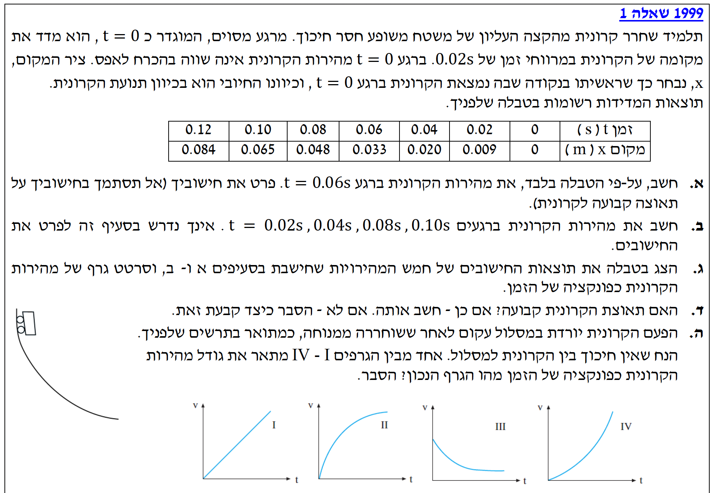
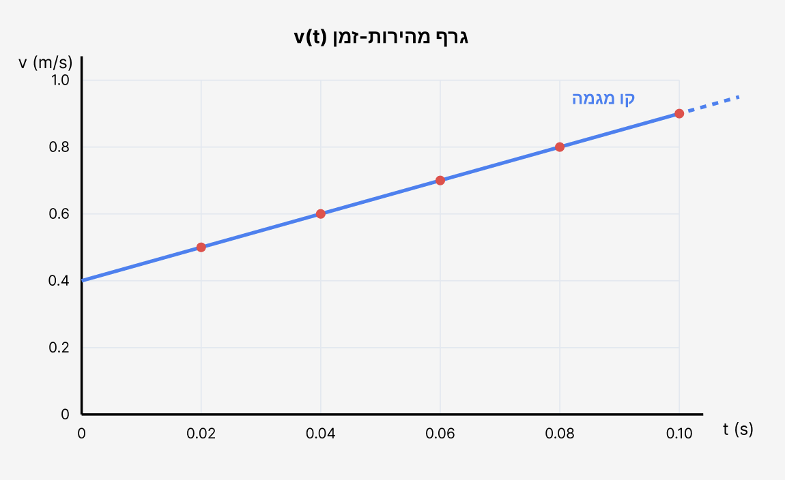
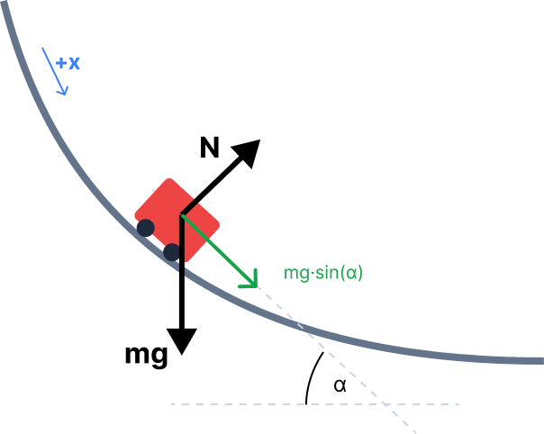

עלינו לחשב על פי הטבלה בלבד את מהירות הקרונית ברגע \( t = 0.06 \, \text{s} \), מבלי להסתמך על הנחת תאוצה קבועה.
מהטבלה, אנו דולים את נתוני המיקום של הקרונית ברגעים הסמוכים לרגע המבוקש:
* כל הנתונים נתונים כבר ביחידות התקניות (MKS) של שניות ומטרים, לכן אין צורך בהמרת יחידות.
את המהירות הרגעית המקורבת \( v \) של הקרונית בדיוק ברגע \( t = 0.06 \, \text{s} \).
כיוון שנאסר עלינו להניח תאוצה קבועה, הדרך לחשב מהירות מתוך נתוני מיקום-זמן בדידים היא בעזרת נוסחת המהירות הממוצעת:
נחשב את המהירות הממוצעת בפרק הזמן הסימטרי שסביב הרגע המבוקש, כלומר בין \( t=0.04 \, \text{s} \) לבין \( t=0.08 \, \text{s} \):
כעת אנו נדרשים לחשב את מהירות הקרונית ברגעים נוספים: \( t = 0.02\text{s}, 0.04\text{s}, 0.08\text{s}, 0.10\text{s} \).
טבלת המדידות המלאה של מיקום כפונקציה של הזמן הנתונה בשאלה.
את המהירויות בארבעה רגעי זמן שונים, בשיטה זהה לזו שהפעלנו בסעיף א'.
נבצע את החישוב עבור כל אחת מהנקודות תוך שימוש במרווח זמן של \( \Delta t = 0.04 \, \text{s} \) (מנקודה אחת לפני ועד נקודה אחת אחרי):
עבור \( t = 0.02 \, \text{s} \):
\[ v(0.02) = \frac{x(0.04) - x(0)}{0.04 - 0} = \frac{0.020 - 0}{0.04} = 0.5 \, \text{m/s} \]עבור \( t = 0.04 \, \text{s} \):
\[ v(0.04) = \frac{x(0.06) - x(0.02)}{0.06 - 0.02} = \frac{0.033 - 0.009}{0.04} = 0.6 \, \text{m/s} \]עבור \( t = 0.08 \, \text{s} \):
\[ v(0.08) = \frac{x(0.10) - x(0.06)}{0.10 - 0.06} = \frac{0.065 - 0.033}{0.04} = 0.8 \, \text{m/s} \]עבור \( t = 0.10 \, \text{s} \):
\[ v(0.10) = \frac{x(0.12) - x(0.08)}{0.12 - 0.08} = \frac{0.084 - 0.048}{0.04} = 0.9 \, \text{m/s} \]בסעיף זה אנו נדרשים לרכז את התוצאות לטבלה חדשה ולשרטט גרף של מהירות הקרונית כפונקציה של הזמן.
חמשת ערכי המהירות שחישבנו בסעיפים א' ו-ב'.
טבלה מסודרת של המהירות \( v \) כתלות בזמן \( t \) והצגה גרפית שלה, תוך העברת קו מגמה.
אין נוסחאות חישוב בסעיף זה, אך אנו משתמשים בעקרונות שרטוט גרפים (ציר אופקי למשתנה הבלתי תלוי - זמן, ציר אנכי למשתנה התלוי - מהירות).
1. טבלת הנתונים החדשה:
| זמן - \( t \, (\text{s}) \) | מהירות - \( v \, (\text{m/s}) \) |
|---|---|
| 0.02 | 0.5 |
| 0.04 | 0.6 |
| 0.06 | 0.7 |
| 0.08 | 0.8 |
| 0.10 | 0.9 |
2. גרף מהירות-זמן וקו המגמה:
לאחר שרטוט הנקודות במערכת הצירים, אנו מעבירים קו מגמה (Best fit line) דרכן. מתוך הגרף ניתן לראות בבירור כי הנקודות מסתדרות היטב לאורך קו ישר אחד המשקף את המגמה שלהן.

אנו נשאלים האם תאוצת הקרונית קבועה, ואם כן עלינו לחשב אותה.
טבלת המהירויות שחישבנו בסעיף ג', וקו המגמה הישר ששרטטנו בגרף המהירות-זמן.
מסקנה לגבי אופי התאוצה, וחישוב גודל התאוצה \( a \) מתוך הגרף.
על פי דף הנוסחאות, תאוצה רגעית מוגדרת כנגזרת המהירות לפי הזמן. בגרף מהירות-זמן התאוצה שווה לשיפוע הקו:
על סמך הגרף ששרטטנו בסעיף ג', ראינו שנקודות המדידה מונחות באופן מושלם על קו מגמה ישר. גרף מהירות-זמן שהוא קו ישר (בעל שיפוע קבוע) מעיד מבחינה קינמטית על כך שהתאוצה קבועה.
כדי לחשב את גודל התאוצה, עלינו לחשב את שיפוע קו המגמה. הדרך הנכונה לעשות זאת היא לבחור שתי נקודות נוחות המונחות בדיוק על קו המגמה (הן לא חייבות להיות בהכרח נקודות מתוך טבלת המדידות, אלא נקודות על הקו ששרטטנו).
נבחר מתוך הגרף שתי נקודות על קו המגמה:
כעת משחררים את הקרונית ממנוחה על מסלול עקום (חסר חיכוך). עלינו לקבוע איזה מהגרפים (I-IV) מתאר את מהירותה כפונקציה של הזמן ולהסביר מדוע.
מסלול עקום שבו השיפוע הולך וקטן ככל שיורדים למטה (המסלול "מתיישר" לקראת הסוף). הקרונית משוחררת ממנוחה (\( v_0 = 0 \)). אין חיכוך.
זיהוי הגרף הנכון של המהירות \( v \) כפונקציה של הזמן \( t \).
נשתמש בחוק השני של ניוטון כדי לנתח את הכוחות מתוך דף הנוסחאות:
כדי להבין כיצד המהירות משתנה, נצייר תרשים כוחות (FBD) עבור הקרונית בנקודה אקראית על המסלול העקום:

נבחר ציר \( +x \) משיק למסלול בכיוון התנועה כלפי מטה. נסמן ב- \( \alpha \) את זווית השיפוע של המשיק ביחס לאופק. הכוחות הפועלים הם כוח הכובד (\( mg \)) וכוח נורמלי (\( N \)) הניצב למסלול.
רכיב כוח הכובד המקביל לכיוון התנועה הוא: \( F_x = mg \sin\alpha \).
נרשום את חוק ניוטון השני בציר התנועה:
מה קורה לזווית \( \alpha \) כאשר הקרונית יורדת? מצורת המסלול רואים שהמסלול "מתיישר", כלומר השיפוע יורד והזווית \( \alpha \) קטנה עם הזמן.
מכיוון שפונקציית הסינוס עולה (עבור זוויות בין \( 0^\circ \) ל-\( 90^\circ \)), ככל ש- \( \alpha \) קטנה, גם הרכיב \( \sin\alpha \) קטן. המסקנה היא שגודל התאוצה \( a \) הולך וקטן לאורך התנועה (התאוצה תמיד חיובית, ולכן גודל המהירות גדל, אך קצב הגידול מואט).
בגרף מהירות-זמן, התאוצה היא השיפוע. אנו מחפשים גרף שבו המהירות מתחילה מ-0 (כי שוחררה ממנוחה), המהירות גדלה (שיפוע חיובי), אך השיפוע הולך וקטן (הגרף הופך לפחות ופחות תלול).